set.seed(42)
die_rolls <- sample(1:6, 600, replace = TRUE)
xtabs(~ die_rolls)die_rolls
1 2 3 4 5 6
100 117 91 92 101 99 ggplot2 package, as described in the tutorial about R packages.In the study and application of statistics, simulations play an important role. For our purposes here, the concept of a simulation is to generate values based on a particular generating process (which may be a distribution), in order to study what samples of that process look like.
For example, in the reading we used the concept of rolling dice to present the idea of a generating process. We discussed how theoretically, each number on a die should come up the same number of times, on average, but empirically getting exactly the same counts of each number is unlikely.
The great thing about simulations is that you can actually test out things like this, and see them in action. This is especially helpful when the concepts are a little unintuitive or surprising. We will explore simulating this particular result, and we will use some graphics code to visualize it.
First, let’s talk about the sample function. This function has four arguments:
x: the vector of values to be sampled fromsize: how many values to samplereplace: whether to sample “with replacement” or notprob: a vector of probabilities, for weighting which values are most likely to be selectedRemember that you can use the command: ?sample to see the help file and get the above information, examples, and more.
But for now, let’s talk through each of these arguments to understand what the sample function is doing. First, we need to decide what values to sample from. The idea is like our earlier concept of having a bag of values that represents our population (can be numbers, but can also be a set of strings, or any other type of data we want), and all of the things in the “bag” are the x vector that we need to specify when we use sample().
For the size argument, we are just telling it how many values we want to pull out of this bag.
The concept of replacement can be understood in terms of our “bag” analogy. The question is, if you pull a value from the bag, do you replace it (i.e., put it back in the bag) before you draw your next number? An example of sampling without replacement would be like drawing a hand of cards in a card game like poker. If you draw the King of Hearts, and then draw your next card, the next card cannot be a King of Hearts because there’s only one of those, and it’s not in the deck anymore, it’s in your hand! It wasn’t “replaced” back into the deck when you drew it.
In contrast, an example of sampling “with replacement” would be if you had a bag of the numbers 1 through 10, but whenever you drew a number, you would write the result down, but then put the number back. Since you are replacing it, it would be possible to draw the same number multiple times.
Finally, the prob argument is used if some things were more likely to get pulled from the bag than others.
So how do we specify these arguments to fit our dice-rolling example?
Well first, the vector of values we are sampling from is clear, it’s the numbers 1, 2, 3, 4, 5, and 6, because that’s what’s on the faces of our die.1
1 Remember that in R, we can use the construction 1:6 to stand for a vector of the integers from 1 to 6.
Now let’s say we want to sample from these number 600 times. Setting the size argument to 600 will give us 600 samples.
We will ignore the prob argument, because we want this to be a “fair” die, that has an equal chance of rolling any of the numbers. But if we wanted to simulate a “loaded” or “weighted” die, where some numbers were more likely than others, we could use this argument to specify the probability of each of the faces.
But what about replacement? Should this be with replacement, or without? (Think about it for a minute before going on.)
The answer is that it needs to be with replacement. First of all, if we didn’t replace the values, we would run out after just six rolls! The analogy would be like somehow removing each side as we rolled them. But to think about it a little less concretely, the generating process is that each time we roll, we still sample a number from the same set of six numbers, and that never changes, no matter how many times we roll.
In the sample function in R, the replace argument is FALSE by default (which you can tell if you look at the help file using ?sample). So this just means that when we use the function, we need to make sure to use replace = TRUE if we want to sample with replacement.
So let’s do this in code now. We will first use the sample function to generate 600 rolls of a die, and assign that to a variable die_rolls. We can then use the xtabs function to see how many of each number was rolled in those 600 rolls.
die_rolls
1 2 3 4 5 6
100 117 91 92 101 99 Remember that our theoretical distribution says that every value is selected with the same probability. We can see that the empirical distribution here is close, but not exact. Luckily enough, we did get exactly 100 rolls of “1”, but then we got 117 rolls of “2”, which seems like a lot more than 100!
Does this mean there is something wrong with our dice? Not at all! This is a perfectly valid result, and it helps illustrate that even if we know the generating process, any actually observed data set is likely to depart from that theoretical ideal.
But before we proceed further, we need to talk a little about how randomness works in R.
The topic of mathematical randomness is actually very complex and interesting. Before computers were readily available, there were actually books of random numbers produced that statisticians could use to “generate” random values by flipping to a random page and putting their finger down without looking. With computers, in some ways it’s just as challenging because (“classical” digital) computers are good at deterministic computing (they produce a predictable result based on the input), but not inherently good at randomness.
It turns out that the numbers generated in R (and in virtually all standard statistical software) are technically called pseudo-random, which means “not actually random”, and in practice they function a little like those old books. The good news for us is that a lot of very smart people have worked hard to make R’s “random” numbers “random enough” to work for our purposes. In other words, they have the same statistical properties that “true” random numbers would have, so we can use them in our analyses. If this topic is intriguing to you, I recommend looking at the help file for ?Random and reading the details and references.
One of the side benefits of using pseudo-random numbers is that if we really want to, we can reproduce exact results, even if there is something random about the process. It would be as if you were using a robot to pick numbers out of the old number books, and you could tell it to use the same sequence of motions each time, in order to exactly reproduce the same set of “random” numbers.
This is what the set.seed() function does. If you use this function, you give it some integer value, and you are basically setting the “starting state” of the random number generator based on that value. I did this in the code chunk above so that when you run this code, you will get the exact same results as I do, every time, as long as you don’t change the set.seed() value.
So take a minute to try it out: first, try running the code chunk above a few times, and see how it gets the same result every time. Now change the number inside the set.seed() function, and you’ll see that now you get a slightly different set of results when you run the chunk, but then that will be consistent each time you run that new seed. Finally, comment-out or delete the set.seed() line, and you’ll see that you get a different set of results every time you run the chunk.
In practical terms, what all this means is that there are a number of “random” generators in R, but they are all pseudo-random, and if you ever want to be able to replicate a “random” result exactly, you can use set.seed() to control the starting state of the random number generator.
Now, it’s time to turn to visualization! Plotting and visualizing data is a really important part of EDA.
ggplot2 packageR actually has two distinct systems for creating graphs and plots. “Base” graphics and “grid” graphics. Base graphics are the older system, and for some things they are a bit simpler, but they are not as flexible, and ultimately start to become harder and harder to work with, the more we want to do with them.
In contrast, the “grid” system uses a more unified system of controlling graphical output. In practice, the most popular package for plotting data in R is called ggplot2, and it’s built on top of the grid system. So while not many people learn all the nuts and bolts of the grid system per se, it is really useful to learn the methods of ggplot2.
That said, ggplot2 does have a bit of a learning curve. But once you understand how it works, you can approach data visualization with a common framework and you can produce an amazing array of different kinds of plots and graphs.
ggplot2 usage to plot our dice rollsBefore we do anything, make sure you have installed the ggplot2 package. Consult the tutorial on packages if you need to review how to do that.
The advice in that tutorial is to put your library statements at the top of the file, but since we are just now introducing the ggplot2 package, we can just do that now. Make sure to run the following code chunk, and if it tells you you don’t have the package installed, please see the r_basics_packages.Rmd Notebook on installing the package before proceeding. In the future, we will put library() calls like this at the very beginning of our notebooks/scripts.
ggplot2 graphThe unique thing about how ggplot2 works is that you build your graphs in layers. Each layer adds or changes something about how the graph is constructed or displayed.
The first layer starts with the ggplot() function.2 What this function does is set up the main parameters of the graph, which is usually something like the x-axis and y-axis, and the name of the data frame where the data is coming from.
2 Note that the name of the package is ggplot2, but the main function is just called ggplot(). The history here is that Hadley Wickham, the original author of ggplot2, along with a ton of other very popular and influential packages, first developed the ggplot package as part of his PhD dissertation in statistics. But he quickly decided that he could do a much better job, and re-implemented the whole package from scratch, and instead of just making it the next version of the ggplot package, he decided it was a big enough re-write to make it an independent package which he called ggplot2. This just goes to show that even brilliant people like Wickham can make silly version-naming decisions. In any case, the end result is that everyone uses ggplot2, and we all just ignore what the “2” in the package name means.
In our case, we just want to plot the counts of numbers in the die_rolls vector. We can use the as.data.frame() function to easily convert the table that xtabs() gives us into a proper data frame:
die_rolls Freq
1 1 100
2 2 117
3 3 91
4 4 92
5 5 101
6 6 99This is a good opportunity to practice one of the principles from the previous unit, which was to rename our columns to be a bit more consistent. Since we are talking about the counts of how many times each “face” of our theoretical die was rolled, let’s rename the columns accordingly:
die_face counts
1 1 100
2 2 117
3 3 91
4 4 92
5 5 101
6 6 99Now we can start building our graph. The other special concept from ggplot2 that we need to introduce is the concept of an aesthetic, which is a bit of jargon from the data visualization literature, which basically means “mapping from data to a visual property.” In ggplot2, there is a function called aes which stands for “aesthetic”, and inside that function is where you use arguments to set different graph properties to the value of different variables (i.e., columns) in your data.
Let’s put this all together. We will start our graph with the following “base” layer. The first argument of the ggplot function is to say what the data frame is that we’re plotting from. The second is an aes function that sets up our basic mapping. We imagine that we would like a bar graph where we have a bar for each die face, with the height of the bar indicating how many of that value we got in our sample. So inside aes() we specify that the x-axis values should come from the die_face column, and the y-axis values should come from the counts column.
We can save this ggplot object to a variable, and then use print() to display it.
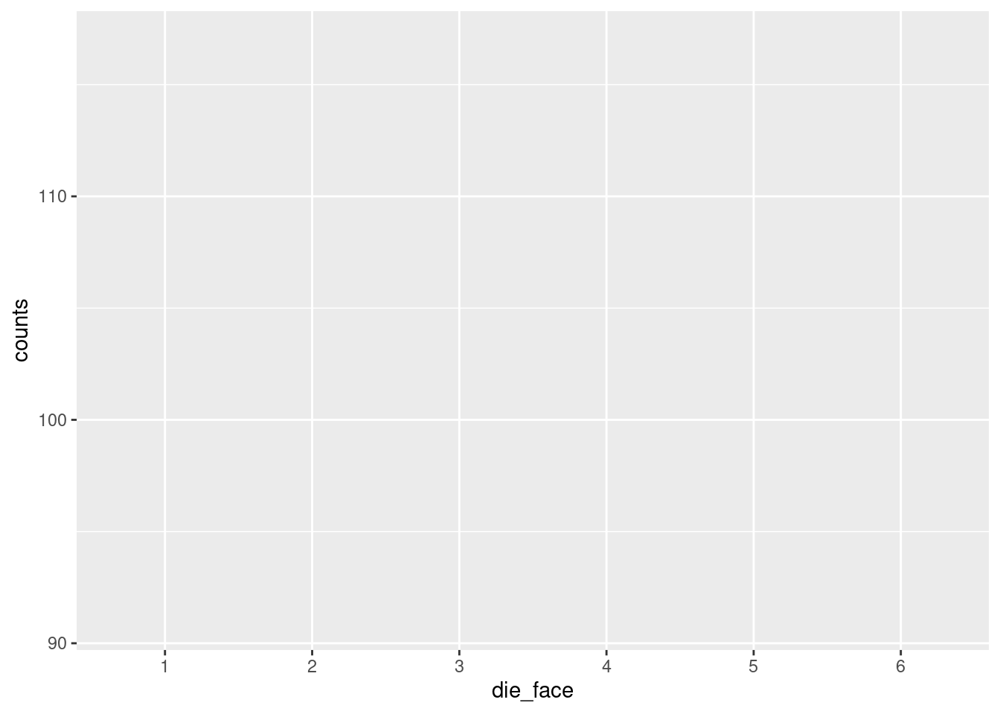
So far so good, but it just looks like an empty graph!3
3 But notice that the axis labels and values seem to make sense. You can think of the base ggplot layer as setting up the initial axes and scales of the graph.
This is because we haven’t yet said what shape (or in ggplot2 terminology, geom) that we want to plot. So we need to add another layer that says, “okay, now that you know the data mappings, display this data as a bar graph.” There is a geom_bar() in ggplot2, but that geom doesn’t literally plot the actual values by default.4 So what we want is a function called geom_col().
4 To dig into the details a bit, geom_bar() by default aggregates the data, basically giving back a count. So in theory, we could have used geom_bar() from the beginning instead of going through the xtabs() steps above. I personally prefer to visualize data directly, instead of making ggplot do data transformations. In any case, the way this is specified is that geom_bar() and geom_col() are essentially the same, except by default, geom_bar() has a stat = "count" default argument, where geom_col() just plots the values that are actually in your data frame column. In previous years, you used to have to say geom_bar(stat = "identity") to get it to just plot the numbers as-is instead of plotting counts. But now they’ve added a geom_col() function just to save people typing stat = "identity" all the time.
Here’s what it looks like to add this layer to our existing graph object and then display it:
Hooray! Now we can see the visual of the “flat” uniform distribution. It’s not perfectly flat, as we discussed, but it’s pretty flat, as far as distributions go.
In this case, we might want to draw a kind of reference line, to help us understand what we are looking at. For example, when we looked at the raw numbers, we noticed that there were in fact exactly 100 rolls of “1”, just like our theoretical distribution would predict. But that’s harder to see, given the values that ggplot2 has selected for our axis tick-marks.5
5 There are also ways to modify the tick-marks, but right now, adding a horizontal line is a little better for our purposes.
So let’s add another layer to our plot, just a horizontal line that marks where “100” is, because that’s our predicted value for each count, based on our theoretical distribution. In order to do that, we can just add the geom_hline() and specify the yintercept argument. Finally, we can make it a dashed line using the linetype argument.
Now it’s easier to see that while the “5” and “6” results were extremely close to 100, only the “1” results were exactly at the predicted frequency of 100.
In order to illustrate how this shape changes and varies if we change the number of die rolls, let’s put all this code together again. But this time, let’s generate a LOT more rolls, to see if it gets flatter.6
6 This time, I put both layers of the ggplot graph in at once, using the +. But I also used a line return after the +. I did this just to make the code a little more readable, and so you don’t necessarily have to scroll to see the whole line. R allows this because when it sees the + at the end of the line, it knows we’re not done yet, so it interprets the next line of code as basically just a continuation of the same line. RStudio helpful adds some indentation when you do this, but unlike languages like Python, that indentation doesn’t actually matter, it’s just to make it easier to read.
number_of_rolls = 60000
more_die_rolls <- sample(1:6, number_of_rolls, replace = TRUE)
more_results <- as.data.frame(xtabs(~ more_die_rolls))
colnames(more_results) <- c("die_face", "counts")
die_plot2 <- ggplot(data = more_results, aes(x = die_face, y = counts)) +
geom_bar(stat = "identity")
print(die_plot2)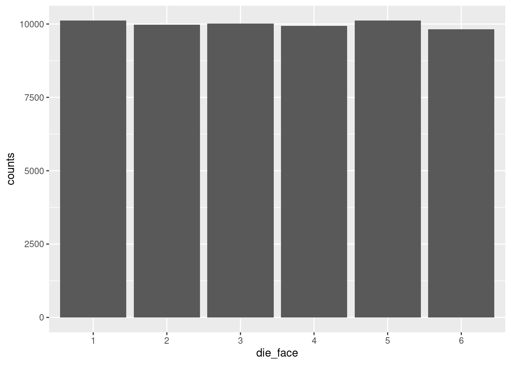
That’s a lot more flat!
Now take a minute to play around with the value assigned to the number_of_rolls variable and re-run the chunk of code over and over to see different results. Make the number of rolls small, like 20 or 30, run that a few times to see the shape change. Then make it larger, and see if you can decide what you think is “large enough” before the distribution really starts looking flat.
Now that we have a method of generating numbers and plotting the resulting distribution, let’s start to explore the normal distribution.
Recall from the reading: the Central Limit Theorem tells us that when we average (or sum)7 many different processes together, that average (or sum) will tend to follow the normal distribution.
7 Since I keep adding these little parentheticals, I’ll take a minute to explain more thoroughly, if you’re interested. The classical CLT talks about things in terms of the sample mean (average). However, a mean is mathematically the same as a sum, divided by the number of elements. So if you have some process that is generating averages which follow a normal distribution, if you looked at the sums instead of averages (assuming every average is taken from the same number of values), then the sums would follow the same distribution. The reason I keep pointing this out is that I’m trying to help you develop intuitions about what things we would expect to follow normal distributions, in theory. So in theory, if the thing you’re thinking about is a theoretical results of a whole bunch of contributing factors, it doesn’t really matter if we think about those factors as averaging or summing, because either way, we would tend to expect a normal distribution.
This means that even though the distribution of numbers generated by an individual die is a uniform distribution (assuming the die is fair), once we add up (or average) many dice rolled at the same time, the distribution of that result will tend towards normal.
In other words, if we:
…the numbers will tend to follow a normal distribution. This is true even though the results of a single die would follow a uniform distribution!
Let’s see this in action, to help convince you that this is true. First, run the following code, which simulates rolling 30 (six-sided) dice, adding them up, and recording that number, and then repeating that process 10,000 times. Note that the size parameter in our sample() function is now the number of dice rolled each time, so we need the replicate() function, which lets us repeat a process many times, and it outputs the results of those repetitions to a vector, which we are assigning to a variable called roll_values.
This use of replicate() could also be accomplished with a for-loop. R has for-loops and while-loops like other languages, but for our purposes, the replicate() function here is a bit simpler to deal with. Also note that I used even more line-returns in the middle of the sample() function, again just to make it a little easier to read than if it were all squished into one long line.)
Now that we’ve generated the numbers, let’s use a slightly different graph called a histogram. The concept is similar as before, but now that we have a lot of different values, not just the 6 die faces, we don’t really want a different bar for each value that we get. Instead, what a histogram does is it takes the raw data – the long vector of numbers representing each of the summed rolls – and it puts those values into “bins”, then plots the count of how many values are in each bin.
For example, if we’re rolling 30 dice each time, we’re generating numbers between 30 and 180 (all 1’s vs. all 6’s). Plotting a bar for each possible value would give us 151 bars. Maybe that’s okay, but a histogram is a way of “binning” these together. If each bin has a “width” of 5, it would mean (for example) that all of the values from 101 to 105 would be in one bin, the values 106 to 110 would be in the next bin, etc. The height of each bin (as a bar) is simply the count of how many values fell into that bin.
This method of binning is even more important when we have a truly continuou variable, because if there are (for example) a few hundred data points but we have 5 or 6 digits of precision, we could eaily end up with no repeated values, so a bar plot of counts wouldn’t show ups very much! By binning values together, we can more easily see where the values are concentrated – in other words, we can more easily see the distribution.
Plotting these bins as bars is a simple way to show the overall “shape” of the distribution, because the taller bins represent the most common or likely values and the short bins represent more infrequent or unlikely values.
The main parameter to play with when creating a histogram is the “width” of the bin.8 Run the code below to create a histogram with a bin basically for each value, but then play around with making the bin size larger to see how the visualization changes.
8 Or alternatively, you can play with how many bins there are, but these are the same thing, in essence. I prefer to think about the width, because that is on the measurement scale. The number of bins is just an arbitrary decision about how many bars you’d like to see.
Side note on code: this time, since we are not calculating the counts ourselves, we don’t need to convert the raw rolls (which are a vector) into a table, so we just skip that step. Since ggplot normally expects a data frame, we need to tell it data = NULL and then give it the roll_values vector directly as the x-axis variable. I am also just doing the whole ggplot call at once, without assigning it to a variable. Either way is valid, I’m just showing you different options.
histogram_bin_width <- 1 # <- change this to adjust the bin width
ggplot(data = NULL, aes(x = roll_values)) +
geom_histogram(binwidth = histogram_bin_width)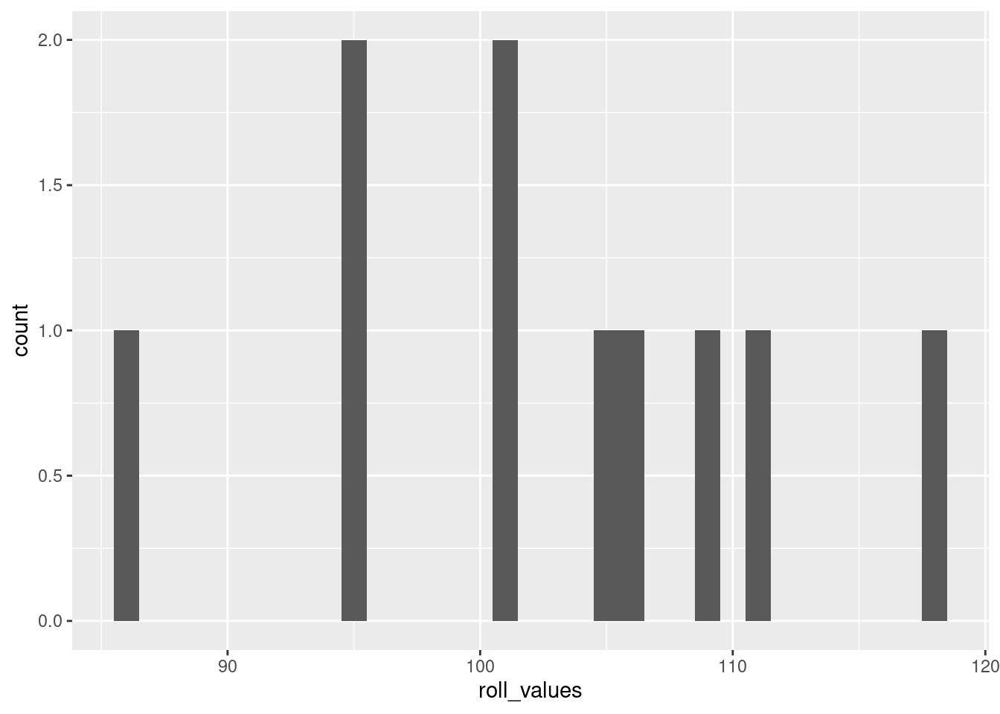
If you run the code without changing the values I started with above, the resulting histogram should look pretty close to a normal distribution. This is the Central Limit Theorem in action!
Play around with the variable values in the code above to get a feel for how they affect the distribution. Recall that the Central Limit Theorem says: with more independent processes, the more it will follow a normal distribution. Conversely, the fewer dice you roll for each of the “data points”, the distribution will look less and less normal. When you get to rolling just one die, you’ll be back to the flat uniform distribution. Two dice show a kind of “v-shaped” distribution (a variation of the binomial distribution), and then as you go up from there, the distribution looks more and more like the characteristic “bell curve” of a normal, exactly as predicted by the CLT.
Where playing with the number of dice in each roll is like adjusting how many processes are being combined for each data point, playing around with the rolls you’re recording is like playing around with how much data you’ve collected. This doesn’t change the underlying theoretical distribution like changing the number of dice does, but it changes how variable the resulting empirical distribution looks.
To put this another way, if we are rolling a lot of dice each time we roll (like 30 or more), then we know we’re getting pretty close to approximating a normal distribution, because of the CLT. But if we only record a few rolls, then the result may not look very normal, because we simply haven’t collected enough data. This is the same as the difference above when we rolled a single die at a time. Even with 600 rolls, the distribution wasn’t nearly as flat (uniform) as it was when we looked at 60,000 rolls, even though in both cases we knew we were generating numbers from a uniform distribution.
In short, the more data you have (represented here by how many rolls we are recording, in the number_of_rolls variable), the more the empirical distribution will resemble the “true” distribution of the generating process.
When we simulate data, even though we know exactly what the theoretical distributions are (because we’re picking them and using them to generate data), you can see that low amounts of data can lead to some very strange looking empirical distributions. For example, go from rolling 30 dice 10,000 times (which looks very close to a normal distribution) to rolling 30 dice just 20 times. It will look a lot less normal! The important thing to understand is that the theoretical distribution only changes with the number of dice being rolled. The fact that it doesn’t look very normal when you only do a few rolls is reflecting the fact that sometimes you need a lot of data to be able to really get a good idea of what the underlying distribution is.
Playing around with the bin width of the histogram is a good way to get a sense of how the visualization can change how things appear. Note that when you do this, you’re not changing anything about the data or the distribution, you’re only changing how the visualization process works.
If you haven’t already, make sure you run and re-run the code yourself – repeated below all together for convenience – for generating numbers and plotting histograms, to get a feel for how adjusting these three variables changes things:
number_of_dice_rolled: for changing the underlying distibutionnumber_of_rolls: for simulating “more data collected”, to see how much the distribution can vary when there’s not very much datahistogram_bin_width: for seeing how this changes the visualization of the data (instead of changing the data)number_of_dice_rolled <- 2 # <- change this number to change the shape
number_of_rolls <- 1000 # <- change this to make it more/less variable
histogram_bin_width <- 1 # <- change this to adjust the bin width
roll_values <- replicate(number_of_rolls,
sum(sample(x = 1:6,
size = number_of_dice_rolled,
replace = TRUE)))
ggplot(data = NULL, aes(x = roll_values)) +
geom_histogram(binwidth = histogram_bin_width)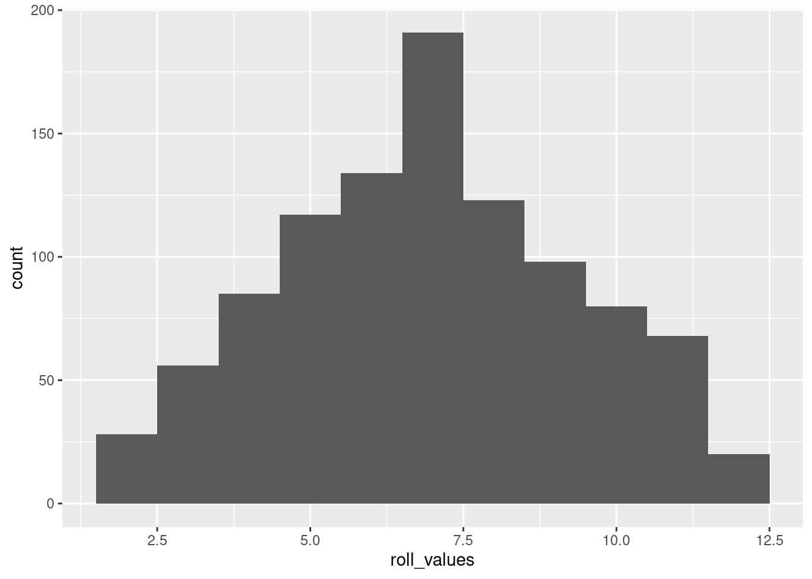
The above is basically a demo of the CLT: showing that even though individual dice follow a uniform distribution, the average of many dice rolls follows a normal distribution.
But if you wanted to generate numbers from a normal distribution, you can do that directly, too! Here’s an example in R, generating 10,000 numbers from a continuous normal distribution with a mean of 30 and a standard deviation of 6, and plotted with a histogram:
normal_sample <- rnorm(10000, mean = 30, sd = 6)
ggplot(data = NULL, aes(x = normal_sample)) + geom_histogram(binwidth = 1)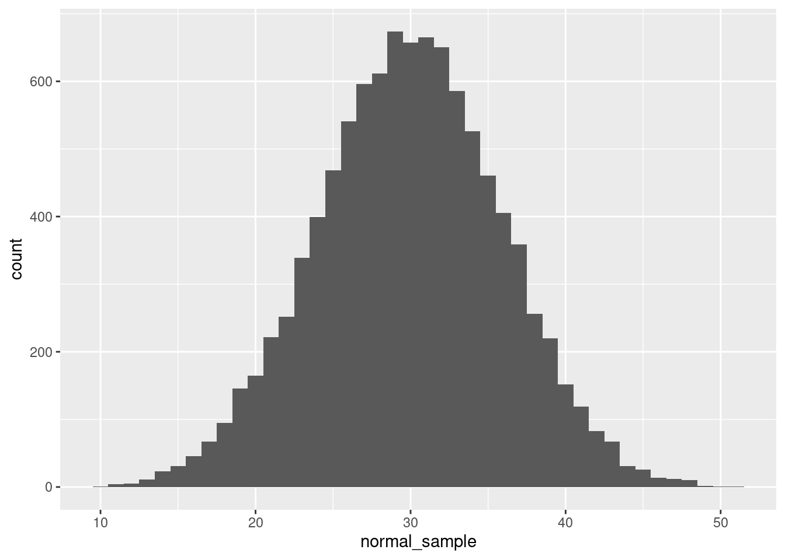
The rnorm() function does all the work here, and we just need to tell it how many values to generate, as well as the parameters.9
9 Quick quiz: what are the default values of mean and sd for the rnorm() function? How can you check? Why are these good choices for the defaults?
Again, feel free to play around with some of the values. What happens if you adjust the standard deviation (sd) parameter? The mean? The number of values generated?
For reference, look back at the diagram of a normal distribution from the concepts reading so you can see how these concepts of the mean (\(\mu\)) and standard deviation (\(\sigma\)) map to the distribution of data you are generating.
The great thing about histograms is that they show your actual data, warts and all. They are invaluable when you are starting off with EDA, because especially if you play around with the bin width, you might stumble across some odd gaps or a couple of extreme outliers, or other patterns you might not notice otherwise.
However, sometimes you also would like to plot something that smooths over the bumps to give you more of a clear picture of the curve of the distribution. That’s what a density plot can be good for.
Here’s an example of a density plot of some random numbers, in comparison to the previous histogram.
And here’s an example with both. If you want to superimpose a density plot over a histogram, you need to tell your plotting software to scale the histogram by density instead of counts. Here’s how to do this in ggplot2:
ggplot(data = NULL, aes(x = normal_sample)) +
geom_histogram(aes(y = after_stat(density)),
fill = "gray", binwidth = 1) +
geom_density()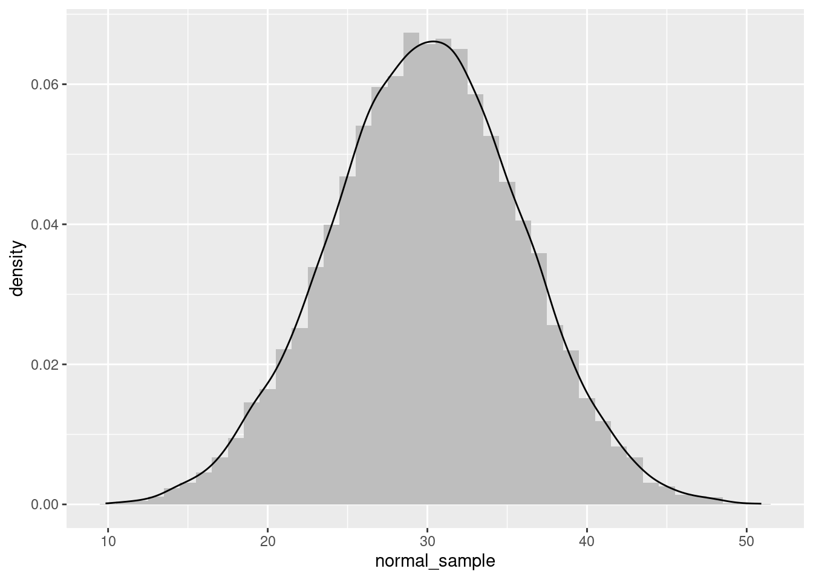
Note that I changed the “fill” color of the histogram to make it lighter so the density curve is more easily visible. In this plot, hopefully you can see what I mean when I say that the density plot is like a “smoothed” histogram.
Plotting histograms and density plots are extremely helpful, but sometimes you would like to summarize a set of numbers in a simpler way. This is what summary statistics are good for. However, summary statistics are a very poor replacement for the level of detail and information you get with plots when it comes to exploratory data analysis. But sometimes summary stats are a helpful shorthand.
We have already covered mean and median. Recall that the mean is the same as getting an average value,10 and the median is the middle value, such that half of the data is higher and half is lower.11
10 The sum of all values, divided by the number of values.
11 And if there is no “middle” number because there’s an even number of values, in R it’s calculated as the average (mid-point) of the two middle numbers.
The concept of the median can be generalized with the concept of quantiles, which are set at any percentages you want, not just the 50% of the median. It’s common for people to examine the “quartiles”, which are the 25%, 50%, and 75% quantiles. That is, the 25% quantile is the value where 25% of the data is smaller than that value, the 50% quantile is the same as the median, and the 75% quantile is the number where 75% of the data is smaller than that value. The 0% quantile is another way of saying the minimum, and the 100% quantile is the same as the maximum.
The code below shows how the R function quantile() can be used on a set of numbers to compute quartiles (by default), or any other quantiles as specified:
more_random_numbers <- rnorm(1000)
quartiles_of_randoms <- quantile(more_random_numbers)
arbitrary_quantiles <- c(0.13, 0.44, 0.89)
weird_quantiles_of_randoms <- quantile(more_random_numbers,
probs = arbitrary_quantiles)
print(c("The minimum, quartiles, and maximum values are:", quartiles_of_randoms))
"The minimum, quartiles, and maximum values are:"
0%
"-3.90254508795281"
25%
"-0.682215010303571"
50%
"-0.0307378886889914"
75%
"0.613972946111201"
100%
"3.00776565885711" 13%
"Some arbitrary quantiles are:" "-1.11264687106445"
44% 89%
"-0.187518497757728" "1.22109475161308" One of the properties of normal distributions is that they are perfectly symmetric, which means that their mean, median, and mode are all at the same value. In other words, the average value (the mean) is also the “middle” value (the median), and both of those are also the most likely/common value of the distribution (the mode).
One of the ways to see this graphically is to plot vertical lines superimposed over a density plot.
Let’s generate a large number of normal variates (another way of saying “numbers pulled from a normal distribution”), plot the density curve, and plot a vertical line at the (empirical) mean (in red), and the median (as a dotted blue line):
random_normals <- rnorm(100000, mean = 5, sd = 2)
random_normals_mean <- mean(random_normals)
random_normals_median <- median(random_normals)
ggplot(data = NULL, aes(x = random_normals)) + geom_density() +
geom_vline(aes(xintercept = random_normals_mean), color = "red") +
geom_vline(aes(xintercept = random_normals_median), color = "blue", linetype = 2)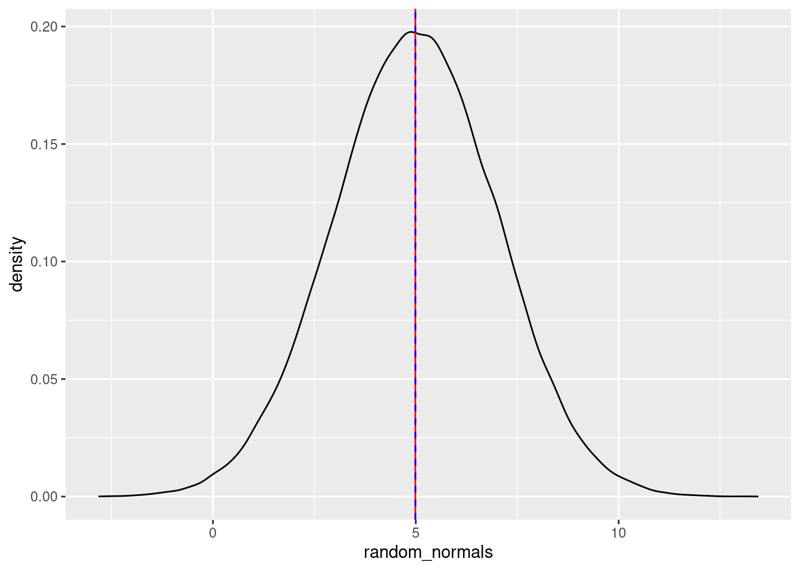
You can play around with these values, but as long as there are a lot of numbers being generated, both the calculated mean and median will be quite close to both the “theoretical” mean (the number we passed to the mean argument), as well as the mode (high point) of the distribution.
If you reduce the amount of numbers generated, you’ll see that the mean, median, and mode will not overlap as much. Again, this is because the empirical (observed) mean, median, and mode will only converge towards the theoretical mean, median, and mode with a lot of data.
We can do the same with plotting quantiles. The following displays quantiles at 2.5%, 5%, 25%, 75%, 95%, and 97.5%.
random_normals <- rnorm(10000, mean = 5, sd = 2)
random_normals_quantiles <- quantile(random_normals,
c(0.025, 0.05, 0.25, 0.75, 0.95, 0.975))
density_df <- data.frame(x = density(random_normals)$x,
y = density(random_normals)$y)
density.025 <- rbind(density_df[density_df$x < random_normals_quantiles[1], ],
c(random_normals_quantiles[1], 0))
ggplot(data = NULL, aes(x = random_normals)) + geom_density() +
geom_hline(yintercept = 0) +
geom_vline(aes(xintercept = random_normals_quantiles), linetype = 2,
color = c("green", "blue", "red", "red", "blue", "green")) +
theme_minimal() +
geom_polygon(data = density.025, aes(x = x, y = y), fill = "green")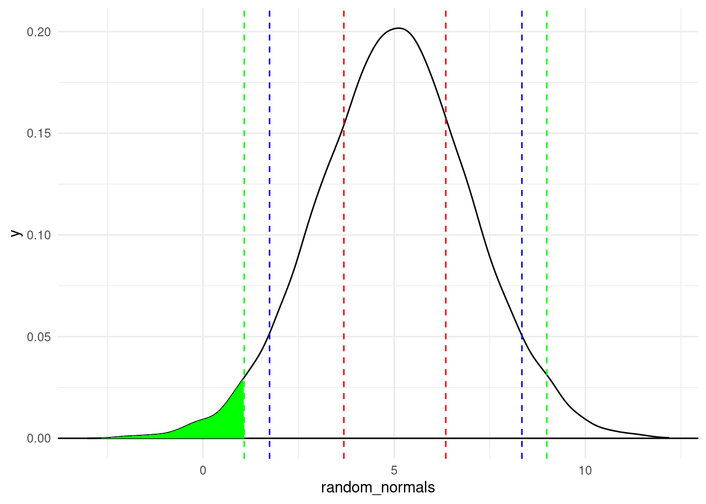
A couple of plotting tips:
theme_minimal() is an easy way to have a “cleaner” look with a lighter backgroundgeom_vline() function because I knew I was creating multiple lines and I wanted them colored differently. Just be aware that for this trick, the number of colors in the vector has to be the same as the number of lines you’re drawing, which is why each color is listed twice (in the order they appear)While we’re visualizing quantiles, let’s talk about the “area under the curve” of a density plot, to continue building our intuitions about what a distribution represents.
In the plot above, the green shaded area is the area under the density curve that covers everything to the left of the 2.5% quantile. Recall that the 2.5% quantile means that 2.5% of the data is less than that value. So to translate this to the visualization, it means that if you calculate the area under the density curve (bounded by the \(y = 0\) line at the bottom), the green area is 2.5% of the total area under the curve.
Mathematically, the density curve is a probability curve, which means that the entire area under the curve sums to 1, or 100%. So the areas that are higher, like the peak around the mode, have a lot of total area, meaning that they are more probable. For example, that area between the two dotted red lines is the area between the 25% and 75% quantiles. That slice represents 50% of the data!
So by looking at portions of the distribution, you can calculate the frequency or probability of data occurring in those regions. This is a powerful tool that we will come back to in the course. For now, I just want you to use these concepts to have a better understanding of what exactly we are visualizing when we look at distributions and density plots like this. The point is that we can get a lot of information about where most of the values in our data occur – how they are distributed.
iris dataGenerating random numbers and simulating “fake” data is a very valuable tool, but let’s go through some of the same processes above with real data, which is usually not as neat as simulated data.
Let’s try out some of these things with a simple data set that is already in R, the iris data set.12 Since the iris data comes pre-loaded, you don’t have to read it in to use it. But since it’s new to us, let’s use some of the ways we’ve already seen to get some idea of what’s in it.
12 This is a “classic” data set, which partly means that it gets used in a lot of tutorials. So apologies if you feel like you’ve already seen this data set too many times. Nevertheless, it’s well-known and helps us illustrate some useful points, so it’s still handy.
First, look at the first few rows of data.
Sepal.Length Sepal.Width Petal.Length Petal.Width Species
1 5.1 3.5 1.4 0.2 setosa
2 4.9 3.0 1.4 0.2 setosa
3 4.7 3.2 1.3 0.2 setosa
4 4.6 3.1 1.5 0.2 setosa
5 5.0 3.6 1.4 0.2 setosa
6 5.4 3.9 1.7 0.4 setosaIn R, most pre-loaded data sets also come with an informative help file, which you can access like so:
You can see from this help file that the data contain measurements (in centimeters) of different parts of various specimens of three different species of iris. This data set is extremely common as a way to illustrate some concepts, especially clustering concepts.
Looking at the first few rows is an easy way to get an idea of how many columns there are, what their names are, and what kind of data is in each column.
We have now added the idea of summary stats to the list of things to look at, like the minimum, maximum, mean, and median. However, it’s usually best to just go ahead and start with a histogram, because a single histogram tells you a lot more than just lists of summary stats.
iris dataPlot a histogram of Sepal.Length, and play around with the bin width. Notice that the bin width is on the scale of the variable being plotted, so you have to pay attention to that when considering good bin width choices. As you explore some different bin widths, do you notice any different patterns? Does the distribution look normal? What do you see?
histogram_bin_width = 0.2
ggplot(iris, aes(x = Sepal.Length)) +
geom_histogram(binwidth = histogram_bin_width)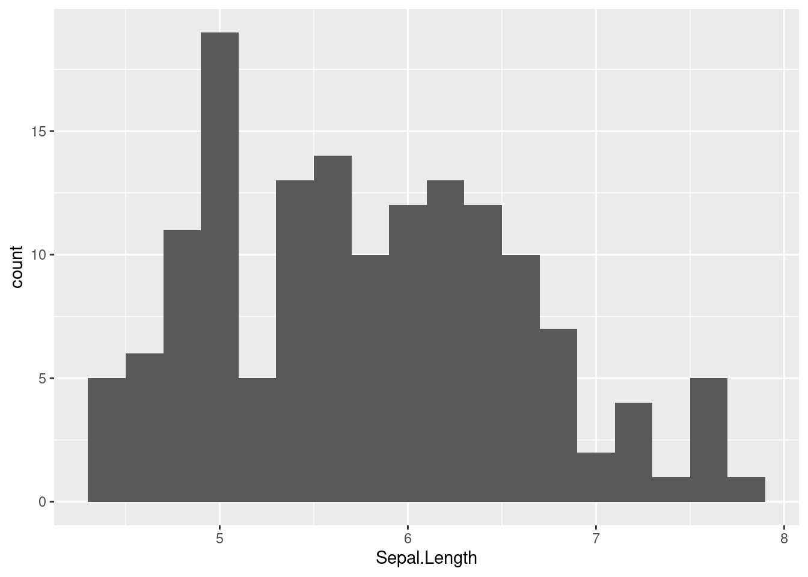
Now do the same for Sepal.Width
histogram_bin_width = 0.1
ggplot(iris, aes(x = Sepal.Width)) +
geom_histogram(binwidth = histogram_bin_width)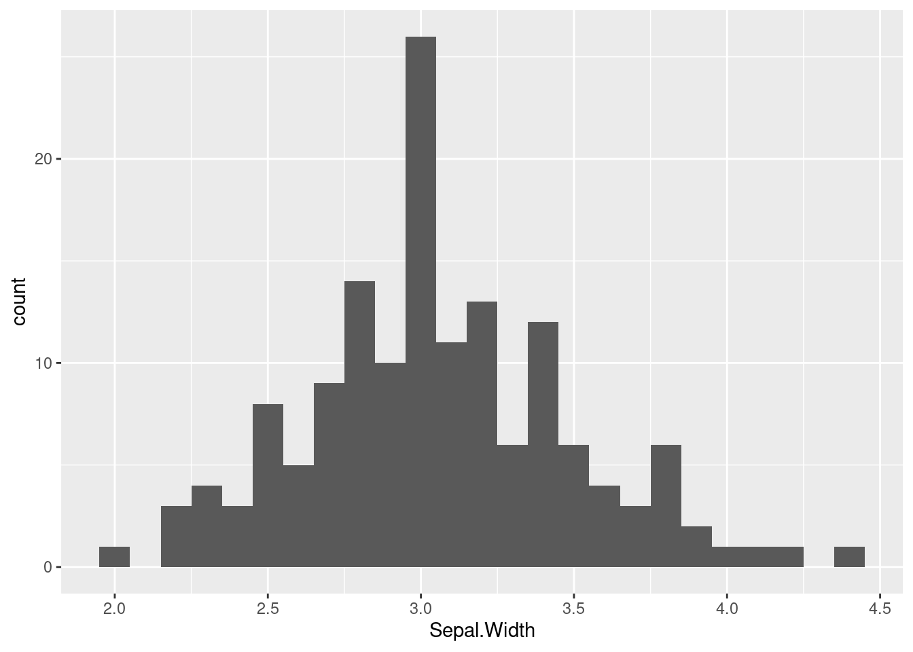
Now do the same for Petal.Length
histogram_bin_width = 0.2
ggplot(iris, aes(x = Petal.Length)) +
geom_histogram(binwidth = histogram_bin_width)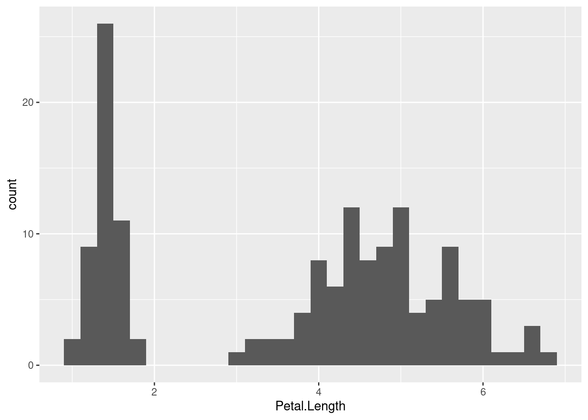
Which of these looks the most like a normal distribution? To my eye, the Sepal.Width might look the most normal, except for that tall “spike” at the mode.
The Petal.Length distribition looks really different, mainly because it looks more like there are two separate distributions instead of a combined one. We can use the term bimodal to refer to data like this that has two clearly separate modes (distribution peaks).
The first thing you might notice is how “messy” or different these distributions look. As you look at distributions, you might start to wonder “well, how close to a normal distribution is this?”
Interestingly, there is not a single foolproof method for assessing “how close” an empirical distribution is to a theoretical one. There are some tests, but those can be very sensitive, meaning that when you have a lot of data, even very small departures from a “perfect” normal distribution can be detected, which isn’t necessarily very helpful.
In the end, visual judgments may be one of the most robust ways to decide how “normal” something looks. That is, eyeballing a distribution and judging whether it “looks normal” is a pretty good method!13 So in order to facilitate this “eyeballing” procedure, it would be nice if we could superimpose a perfect theoretical normal distribution on top of our data, to get a more clear visual comparison.
13 In some statistical methods, there are mathematical adjustments or “corrections” that need to be performed if there are departures from normality. So for some specific analyses, there are more precise ways to quantify how “non-normal” a distribution is, but these are specific-purpose tools. For general-purpose assessment of “how normal” a distribution appears to be, just looking at a visualization is one of the best approaches.
So let’s learn how to do just that!
The first step is to learn how to generate theoretical densities. The concept of a density is that it’s the relative probability of observing a value, given a distribution. When we did the density plots above, that’s what we were plotting. But those plots were empirical densities, based on our sample data. What we want here are theoretical densities that match the normal distribution.
So what we want is to be able to say, “okay, for every value on the x-axis, what is the probability density for that value?” In order to do this, we can follow the steps below. The idea here is that we want to pick parameter values for our distribution that match the parameter values we see in our data and generate density values from that distribution, then plot that over our histograms to be able to compare the shapes.
The only really new function here is for step 3: the density function. The good news is that R has lots of different density functions, for different theoretical distributions. Here we want the density function for the normal distribution, which is just dnorm(). All you do is give dnorm() your \(x\) values and the parameters (mean and sd) of your distribution, and it gives you back densities that correspond to your \(x\) values.
Here are the steps in code, for getting densities based on the Sepal.Width variable in the iris data.
# Step 1: remember the parameters: mean (mu) and standard deviation (sigma)
# Step 2: calculate those parameter values from your data
mu <- mean(iris$Sepal.Width)
sigma <- sd(iris$Sepal.Width)
# Step 3: compute the densities for the observed values, using these parameter values
y_densities <- dnorm(iris$Sepal.Width, mean = mu, sd = sigma)Finally, in order to plot the theoretical curve on top of the data, we need to do what we did above, plotting a histogram on the density scale, and then adding a layer for the theoretical densities we just computed.
ggplot(iris, aes(Sepal.Width)) +
geom_histogram(aes(y = after_stat(density)), binwidth = 0.1) +
geom_line(aes(y = y_densities))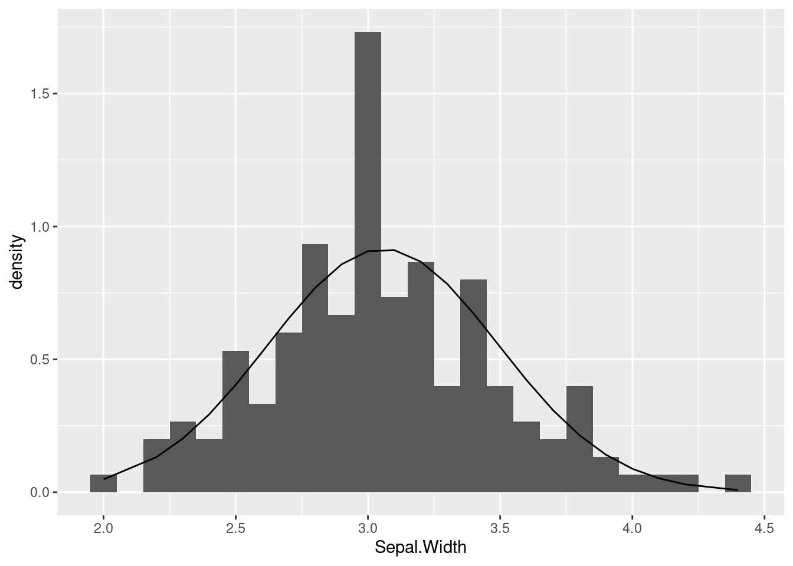
The line that is being plotted (based on the theoretical densities) show what shape we should see, if our data indeed followed a normal distribution. In this case, you can see that the curve seems pretty close to the histogram bars, except for that big “spike” in the middle. But overall this is not terrible.
Compare this to if we took the same steps with the Petal.Length variable:
# Step 2: get the mean and sd of the variable we are examining
mu <- mean(iris$Petal.Length)
sigma <- sd(iris$Petal.Length)
# Step 3: compute the densities for the observed values
y_densities <- dnorm(iris$Petal.Length, mean = mu, sd = sigma)
# Step 4: plot
ggplot(iris, aes(Petal.Length)) +
geom_histogram(aes(y = after_stat(density)), binwidth = 0.1) +
geom_line(aes(y = y_densities))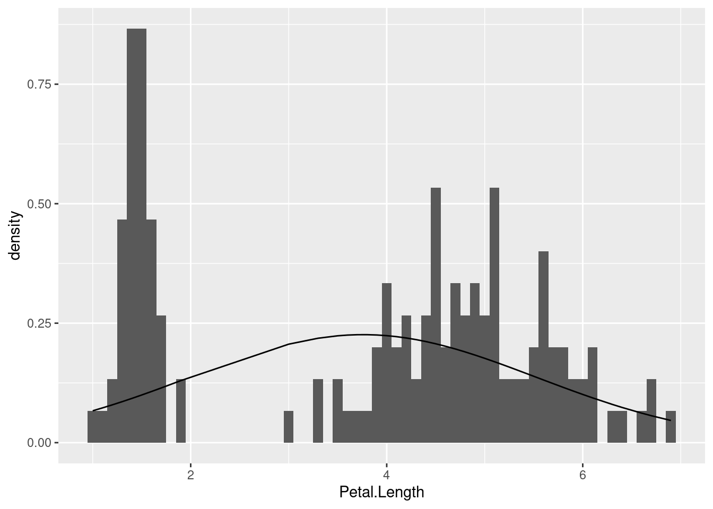
We already noticed that this distribution was decidedly non-normal since it was clearly bimodal. But what this illustrates is how off we would be if we just calculated summary stats and blindly assumed it followed a normal distribution.
In general, this method of comparing empirical distributions (shown above in the histograms) with theoretical distributions (shown as a line, computed using a density function) can help us to explore and understand our data, and it can help us avoid mistakes like making assumptions that don’t hold up.
At this point, we have developed a lot of tools in order to explore single variables, and with a combination of plots and summaries, we can examine our numerical (continuous or interval) variables in the process of performing exploratory data analysis (EDA).
Being able to compare empirical (observed) data distributions to theoretical distributions like the normal distribution is a powerful way for us to check our assumptions. Maybe we have expectations that our variables should be normally distributed, or maybe we have no idea and we just want to check. Using the techniques explained here will let us do that.
This was a long tutorial, but it’s worth spending some time on it, because the concepts we are covering here are foundational for our next steps.
The final tutorial you should check out in this Unit is much shorter, and it discusses the “how”s and “why”s of transforming variables, focusing on logarithmic transformations.
Good luck, and as always, keep asking questions!